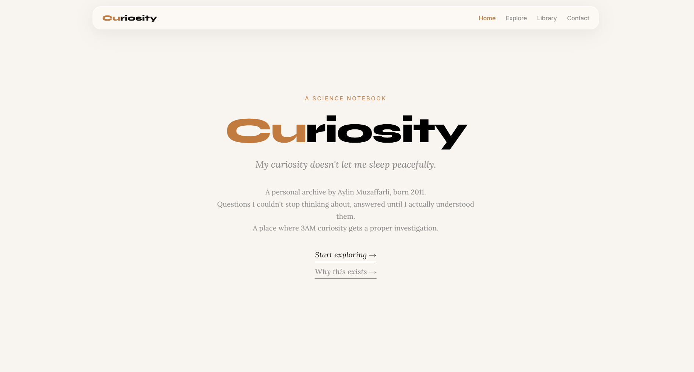

The Curiosity platform is now live!
It’s a platform built around one simple idea: a place where questions live. For me, this project is not separate from my life.
I first remember feeling something like this when I was about ten.
I read Alexei Leonov’s book Солнечный ветер, and something in it sparked a quiet intensity in me — a kind of inner ignition I didn’t yet have words for. I remember long summer days, sitting alone in my room, eating grapes, reading books that slowly but permanently changed how I saw everything around me.
I remember walking with my mom along the seaside boulevard, watching the white buildings reflect sunlight against the sea. They looked almost unreal — like rockets that had forgotten how to fly. Even ordinary things felt strangely alive: cars, fuel stations, airplanes waiting somewhere in the sky.
There was a quiet fascination in all of it…
As time passed, my attention shifted into programming and physics contests, violin practice, and structured learning paths that had little to do with space. But something never really left.
I still don’t always know exactly what I’m searching for. Sometimes I just look at the sky for a long time — in the afternoon or late at night — thinking about white rooms, distant rockets, and quiet sunny weather that feels too calm for how big the universe is. And I keep returning to questions I can’t ignore.
Now I’m 14, and I’m self-studying physics, math, and Arduino outside of school, building my own structure instead of following formal programs. I also explore my own curiosity questions — I can’t really be without them.
I want to understand how the world works from first principles. This gives me an incredible amount of satisfaction.
I’m driven by understanding itself. From questions like “what is light?” to missions like Artemis 2, the process of learning gives me a deep sense of fulfillment.
Sometimes it feels like curiosity doesn’t really allow silence. Questions appear on their own — from simple mechanisms like how a light bulb works to much larger questions like what meaning life even has.
Over time, I realized I needed a place to keep my researched questions together.
I used to write everything into PDFs, but over time they became massive and hard to navigate. I wanted something more structured, more beautiful, and faster to access.
So I built a system…
This is how Curiosity was born. It is part journal, part lab, part archive of questions I don’t want to forget.
It’s not meant to be finished. It’s meant to evolve with me.

Explore
You can visit Curiosity here:
aylinmuzaffarli.com/curiosity
My personal website:
aylinmuzaffarli.com
(If you want to reach out, both websites include a contact section)
Hope you enjoy it.